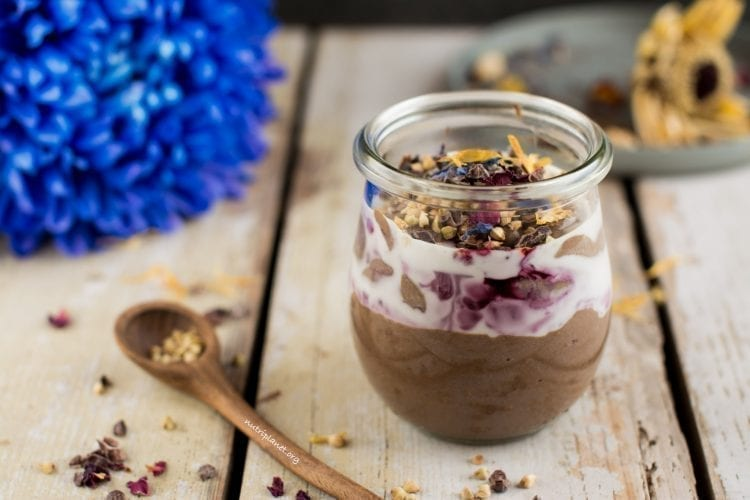

Vegan Parfait
Description
This healthy chocolaty vegan yogurt parfait is a great afternoon pick-me-up snack that takes only one bowl and less than 5 minutes to make! Besides its simplicity, you’ll enjoy the perfect creaminess combined with fresh flavour that’ll lift you up!
Ingredients
- 5 heaped tbsps. (150g, 5.3oz) plain soy yogurt
- ½ level tbsp. coconut flour
- 2 level tbsps. carob powder
- ½ level tbsp. cocoa powder
- ½ level tsp. cinnamon
- Liquid stevia (I used 7 drops) or birch xylitol to taste
- ⅛ tsp. ground clove (optional)
- ⅛ tsp. ground nutmeg (optional)
Steps
- In a small bowl, mix all ingredients together.
- Add toppings of choice: unsweetened applesauce, cocoa nibs, chopped nuts, sprouted buckwheat, fresh or frozen berries, some pure blueberry, lingonberry, cranberry, lemon or pomegranate juice.